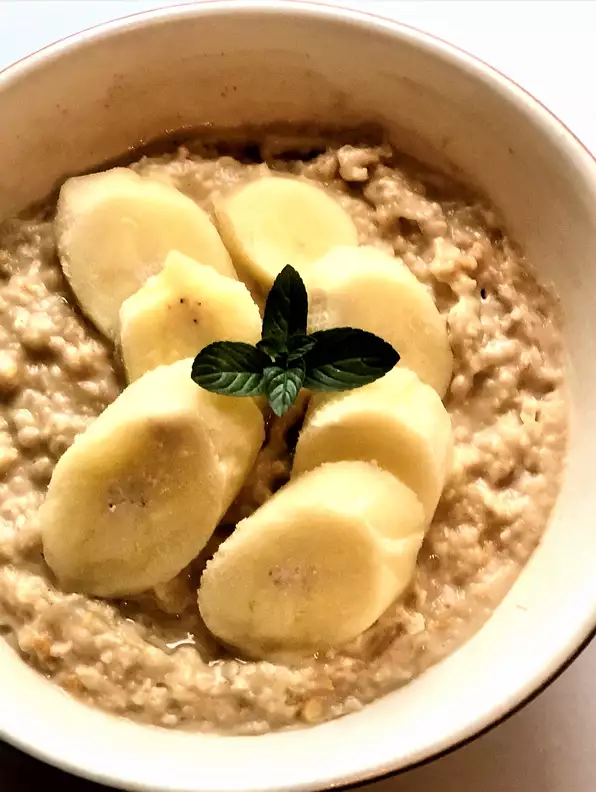

5 Minute Oatmeal

Perfect and nutritious meal when you are in a rush. Quick and easy to make and is very flexible with ingredients.
Ingredients
- 1/2 Cup Oatmeal
- 1 Cup Water
- Spoonful Peanut Butter to taste
- 1 Banana
- Light drizzle of honey
- And other fruits if you want!
Directions
- Mix oatmeal and water into a bowl
- Add peanut butter and banana and mix again
- Microwave 1 minute
- Add honey and stir
Check out other amazing recipes!